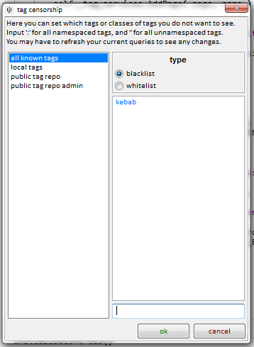
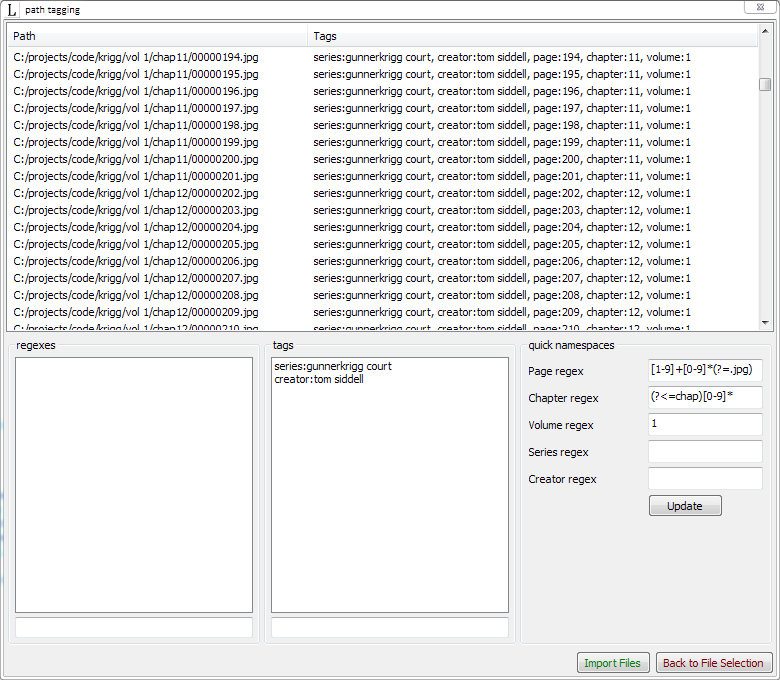
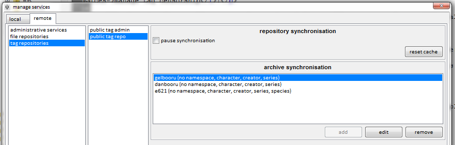

this is non-comprehensive
I am always changing and adding little things. The best way to learn is just to look around. If you think a shortcut should probably do something, try it out! If you can't find something, let me know and I'll try to add it!
advanced mode
To avoid confusing clutter, several advanced menu items and buttons are hidden by default. When you are comfortable with the program, hit help->advanced mode to reveal them!
searching with wildcards
The autocomplete tag dropdown supports wildcard searching with '*'.

The '*' will match any number of characters. Every normal autocomplete search has a secret '*' on the end that you don't see, which is how full words get matched from you only typing in a few letters.
This is useful when you can only remember part of a word, or can't spell part of it. You can put the '*' anywhere, but you should experiment to get used to the exact way these searches work. Some results can be surprising!

You can select the special predicate inserted at the top of your autocomplete results (the highlighted '*gelion' and '*va*ge*' above). It will return all files that match that wildcard, i.e. every file for every other tag in the dropdown list.
This is particularly useful if you have a number of files with commonly structured over-informationed tags, like this:

In this case, selecting the 'title:cool pic*' predicate will return all three images in the same search, where you can conveniently give them some more-easily searched tags like 'series:cool pic' and 'page:1', 'page:2', 'page:3'.
exclude deleted files
In the client's options is a checkbox to exclude deleted files. It recurs pretty much anywhere you can import, under 'import file options'. If you select this, any file you ever deleted will be excluded from all future remote searches and import operations. This can stop you from importing/downloading and filtering out the same bad files several times over. The default is off. You may wish to have it set one way most of the time, but switch it the other just for one specific import or search.
inputting non-english lanuages
If you typically use an IME to input Japanese or another non-english language, you may have encountered problems entering into the autocomplete tag entry control in that you need Up/Down/Enter to navigate the IME, but the autocomplete steals those key presses away to navigate the list of results. To fix this, press Insert to temporarily disable the autocomplete's key event capture. The autocomplete text box will change colour to let you know it has released its normal key capture. Use your IME to get the text you want, then hit Insert again to restore the autocomplete to normal behaviour.
tag censorship
If you do not like a particular tag or namespace, you can easily hide it with services->manage tag censorship:

You can exclude single tags, like as shown above, or entire namespaces (enter the colon, like 'species:'), or all namespaced tags (use ':'), or all unnamespaced tags (''). 'all known tags' will be applied to everything, as well as any repository-specific rules you set.
A blacklist excludes whatever is listed; a whitelist excludes whatever is not listed.
This censorship is local to your client. No one else will experience your changes or know what you have censored.
importing and adding tags at the same time
Add tags before importing on file->import files lets you give tags to the files you import en masse, and intelligently, using regexes that parse filename:

This should be somewhat self-explanatory to anyone familiar with regexes. I hate them, personally, but I recognise they are powerful and exactly the right tool to use in this case. This is a good introduction.
Once you are done, you'll get something neat like this:

Which you can more easily manage by collecting:

Collections have a small icon in the bottom left corner. Selecting them actually selects many files (see the status bar), and performing an action on them (like archiving, uploading) will do so to every file in the collection. Viewing collections fullscreen pages through their contents just like an uncollected search.
Here is a particularly zoomed out view, after importing volume 2:

Importing with tags is great for long-running series with well-formatted filenames, and will save you literally hours' finicky tagging.
tag archives
A user told me he had scraped all of danbooru's tags, and we got to discussing if his data could be integrated with hydrus.
There are some technical limitations that prohibit rawly importing that data into a hydrus tag repository (our different systems use different file hash standards), but I figured it would be possible to import his data into a hydrus client, at least for any locally stored files.
I developed hydrus tag archives, which are just efficiently indexed databases of hashes and tags. They are normal files, external to hydrus, that you can ftp or move around like any other. Putting a tag archive in the right directory in your client's database allows you to synchronise with that archive, importing whatever tags it thinks your files should have to whatever tag service you want.
To sync with an archive, go services->manage services and browse to your local tag service or a remote tag repository:

Tag archive sync works a bit like the import tag options when you download from a booru or other gallery; you select which namespaces the archive offers that you are interested in, and when you click OK, the client will check if the archive has any tags for your local files. If so, it will filter them according to your namespace selection and then add or pend the tags to that tag service, just as if you had entered them in the manage tags dialog.
New files that you import will also be checked against your archive syncs, keeping you up to date.
You can get some archives users have created here.
Be careful with this tool! If you have tens of thousands of files and sync with an archive that has tens of millions of mappings, you may end up adding a whole lot of tags. It may take several minutes to initialise the sync as well. Make sure your namespaces are set exactly how you want before you click OK on the dialog.
custom shortcuts
Once you are comfortable with manually setting tags and ratings, you may be interested in setting some shortcuts to do it quicker. Try hitting file->shortcuts or clicking the keyboard icon on any media viewer window's top hover window.
There are two kinds of shortcuts in the program--reserved, which have fixed names, are undeletable, and are always active in certain contexts (related to their name), and custom, which you create and name and edit and are only active in a media viewer when you want them to. You can redefine some simple shortcut commands, but most importantly, you can create shortcuts for adding/removing a tag or setting/unsetting a rating.
Use the same 'keyboard' icon to set the current and default custom shortcuts.
finding duplicates
system:similar_to lets you run the duplicates processing page's searches manually. You can either insert the hash and hamming distance manually, or you can launch these searches automatically from the thumbnail right-click->find similar files menu. For example:

PIL errors
At some point, you will probably encounter a PIL error when importing a file. PIL is the Python Image Library, the code I use to manipulate image files. Some files are kooky, and just won't load with it. I can't fix these errors, since PIL is not mine. Just gotta deal with it.
If the PIL error'ing file is one you particularly care about, I suggest you import it into photoshop or similar and save it again. Photoshop should be clever enough to parse the file's weirdness, and then it'll hopefully save again to a simpler format that PIL, and hence the client, will be able to understand.
busted up gifs
Animated gifs are a real pain in the neck. The standard permits odd palettes and colourspaces, and PIL has a hard time parsing it all. I try my best to compensate, but some still break for reasons I can't fathom. I have fixed most of this on Windows by moving to OpenCV for gif rendering, but it still affects Linux and OS X.
So, some gifs will have a coloured first frame but grey frames thereafter; or they will have odd washy noise all over; or they will just be black. The file isn't broken, the client is just looking at it wrong.
setting a password
the client offers a very simple password system, enough to keep out noobs. You can set it at database->set a password. It will thereafter ask for the password every time you start the program, and will not open without it. However none of the database is encrypted, and someone with enough enthusiasm or a tool and access to your computer can still very easily see what files you have. The password is mainly to stop idle snoops checking your images if you are away from your machine.